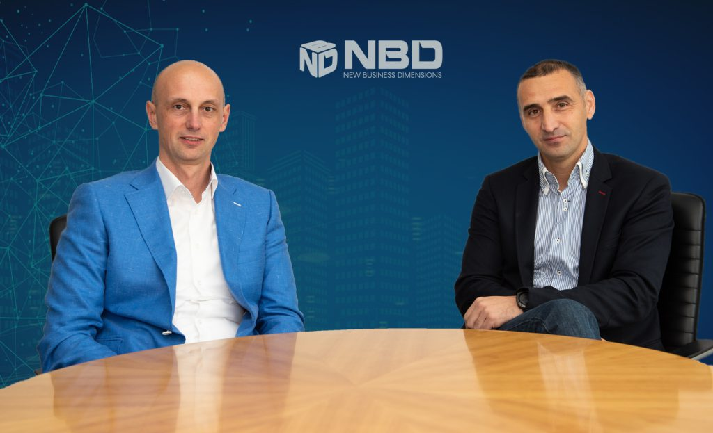
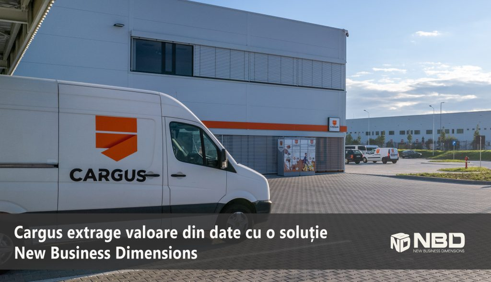
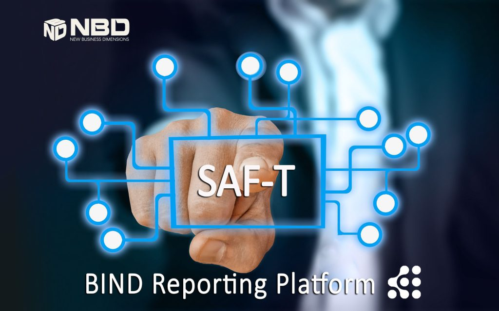
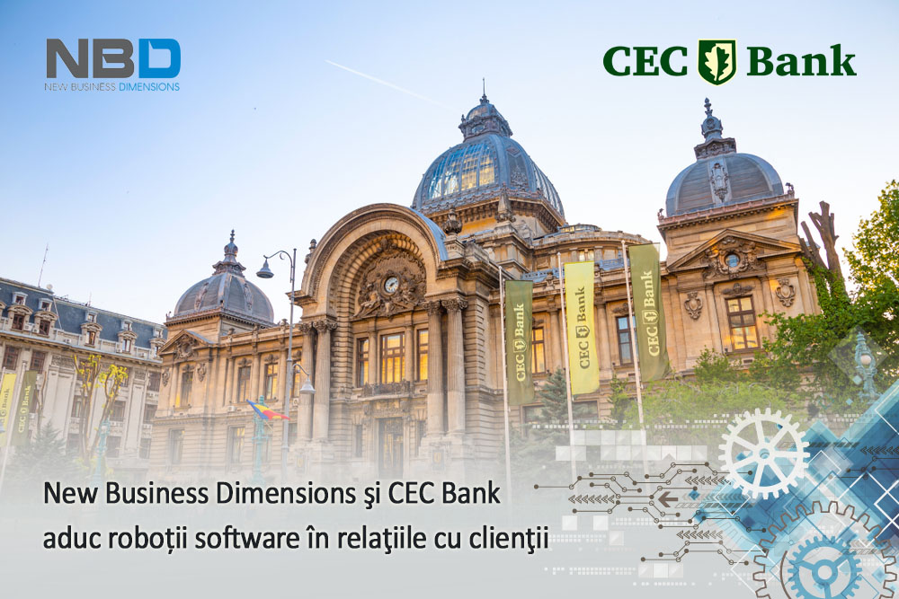
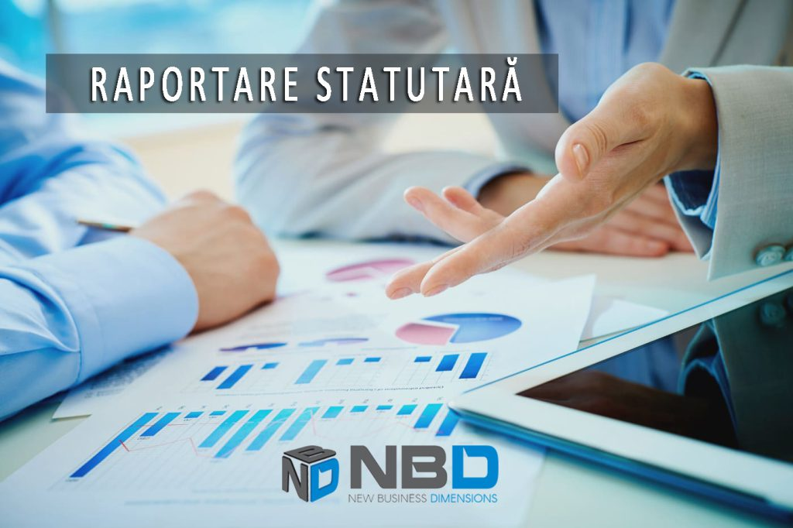
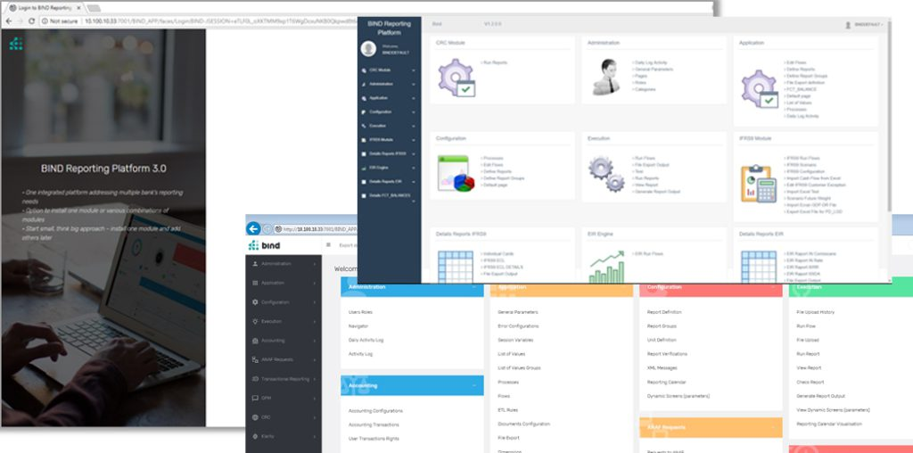
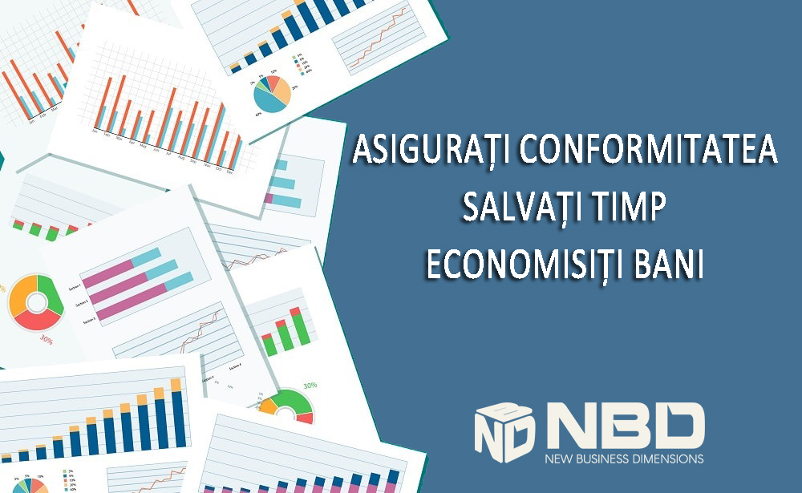

New Business Dimensions are o nouă structură a acționariatului
decembrie 13, 2022
NBD
Business, Development, Science, Software, Technology
New Business Dimensions, lider de piață pe nișa raportării statutare și Business Intelligence pentru sectorul financiar-bancar, anunță
schimbarea acționariatului companiei. Astfel, noua structură îi include pe Emanuel Oană, CEO și acționar pre-existent care își majorează deținerile
la 55% din capitalul social, devenind acționar majoritar, și Marius Ionescu care preia 45% din capitalul social și care, pe lângă investiția de
capital, aduce know-how-ul pe segmentul activității de trezorerie și a vânzărilor pe piețe externe.

Foto: Marius Ionescu & Emanuel Oană, acționarii NBD.
”Noii acționari ai NBD vor păstra actuala echipă de management care va fi întărită cu noi membri în special în domeniul financiar și business
development, dar va continua cu același model operațional care a adus rezultate în ultimii 12 ani. Noua structură mai suplă a acționariatului
va face ca deciziile strategice să fie mai ușor de luat și aplicat, va oferi un plus de stabilitate și va permite trasarea unor planuri de
dezvoltare la nivel local și regional mult mai coerente și ambițioase. Compania este solidă și matură, cu o bază extinsă de clienți enterprise.
Ne bucurăm de o creștere pe toate segmentele, reflectată atât în cifra de afaceri, cât și în profitabilitate. Mă bucură decizia lui Marius Ionescu
prin care se alătură NBD. El are o experiență relevantă în domeniul financiar-bancar și sunt convins că împreună vom crea un viitor mai bun pentru
companie, angajați, clienți și vom maximiza la nivel regional potențialul NBD.”, afirmă
Emanuel Oană, acționar majoritar și CEO al NBD.
Marius Ionescu are o experiență de peste 10 de ani în cadrul unor importante grupuri financiar-bancare din România, timp în care a construit
echipe de management și a dezvoltat echipe regionale de vânzări de produse de trezorerie bancară și produse financiare derivate adresate
clienților corporativi. După ce în urmă cu nouă ani a cofondat Pluridio, acesta este în prezent implicat în mai multe companii ce activează
în domeniul IT&C. În cadrul NBD, Marius Ionescu se va implica în conturarea strategiei de dezvoltare a companiei specifice domeniului
financiar-bancar, în extinderea internațională și în crearea și dezvoltarea unui grup consolidat de firme din domeniul IT cu ambiții la
nivel internațional.
”Am investit în NBD înțelegând foarte bine business-ul său și totodată rolul strategic pe care îl deține în nișa în care activează,
dar și potențialul semnificativ de scalare. Există o sinergie între NBD și Pluridio, ambele deservind cu succes sectorul bancar.
Am încredere în managementul existent și în echipa solidă de profesioniști pe care o voi susține, și alături de care vom duce mai
departe dezvoltarea companiei.”, declară Marius Ionescu,
CBDO al NBD responsabil de dezvoltare, strategie și piețe externe.
Cumpărătorii au fost asistați în structurarea tranzacției de LBO (Leveraged Buyout) și Due Diligence financiar de Capital Debt Services,
reprezentată de Nicolas Pleșea, Senior Partner, cu o experiență de peste 18 ani în structurarea tranzacțiilor de tip leveraged buyout,
M&A și private equity.
”Tranzacția a fost un succes și a fost realizată într-un timp scurt de numai șase luni, ceea ce poate fi considerat un record național pentru
un deal M&A cu structură de LBO în segmentul său.”, a declarat Nicolae Pleșea.
Asistența juridică privind structurarea tranzacției, exercițiul de Due Diligence juridic, pregătirea și negocierea documentației tranzacției
a fost asigurată pentru cumpărători de casa de avocatură Volciuc Ionescu, prin echipa coordonată de Sabin Volciuc,
Ana Sandu-Capra și Ada Butnaru.”Ne-a facut mare plăcere să lucrăm cu Marius și Emi în această tranzacție foarte interesantă și
solicitantă din perspectiva structurii și a calendarului.”, au declarat aceștia.
Despre New Business Dimensions
New Business Dimensions (NBD)
este un pionier al introducerii soluțiilor de Business Intelligence în instituțiile financiare din România. Compania a fost înființată
în anul 2010 de o echipă de profesioniști având experiența comună a peste 10 ani în proiecte software destinate pieței financiar-bancare din estul
Europei, îndeosebi implementări de proiecte software Core Banking și Data Warehouse & BI. În prezent compania deservește prin produsele sale
tehnologice cele mai importante bănci din sistem și este lider în industria și comunitatea financiar-bancară din România pe segmentul de profil.
Compania NBD a încheiat anul fiscal 2021 cu o cifră de afaceri de aproape 4 milioane de euro, iar în 2022 estimează o creștere semnificativă atât ca volum de
business, cât și profitabilitate.
Cargus extrage valoare din date cu o soluție New Business Dimensions
noiembrie 24, 2022
NBD
Business, Development, Science, Software, Technology

Cargus, prima companie de curierat de pe piața românească, beneficiază de o soluție modernă de analiză a datelor şi raportare managerială,
dezvoltată de partenerul tehnologic New Business Dimensions. Noua soluţie permite companiei să centralizeze şi să prelucreze datele din mai
multe sisteme operaţionale. Complementar, utilizatorii au posibilitatea să obţină singuri rapoartele dorite, combinând multiple seturi de date,
inclusiv date istorice.
Astfel, Cargus va avea, în timp real, o perspectivă de ansamblu, corectă și completă asupra activităţii. Soluţia construită de New Business Dimensions
include tehnologii de Data Warehouse și servicii Cloud Microsoft, acestea generând un suport real pentru analize și decizii de business ale Cargus.
Microsoft este unul dintre principalii furnizori globali de platforme pentru Analytics și Business Intelligence,
conform ediției 2022 a Gartner Magic Quadrant.
”Soluția de analiză şi raportare construită pentru Cargus integrează tehnologii de data warehouse cu funcționalităţi avansate de extracție, unificare,
curățare și analiză a datelor. La nivel de utilizator, soluția se bazează pe serviciul cloud Microsoft PowerBI, ce permite prelucrarea individuală şi
vizualizarea dinamică a rapoartelor. Proiectul este 100% cloud, ceea ce înseamnă costuri reduse cu infrastructura, dar totodată performanţă ridicată şi
scalabilitate. Cargus ne-a acordat încredere în acest proeict şi ne bucurăm că soluţia oferă beneficiile aşteptate.” afirmă Emanuel Oană,
Managing Director, New Business Dimensions.
Pentru Cargus, utilizarea acestei soluţii de Business Analytics este esenţială în procesul de extindere. În ultimii ani, compania a
investit masiv în creșterea amprentei pe piața de curierat, prin deschiderea de noi depozite, modernizarea unităților existente, extinderea
rețelei SHIP & GO la nivel național și diversificarea opțiunilor de livrare, digitalizare și inovații, dar și prin dezvoltarea echipei.
„Soluția dezvoltată de New Business Dimensions oferă predictibilitate atât asupra calităţii datelor, cât şi a timpului în care obţinem rapoartele
implementate. Efortul echipei Cargus care gestiona obținerea rapoartelor a fost redus substanţial,
acum putând aloca mai mult timp interpretării datelor şi analizelor diverselor scenarii de lucru.”
spune Belgin Bactali, Chief Financial Officer Cargus.
În România, piața de curierat are o creștere accelerată, generată de contextul global din ultimii ani, de evoluția comerțului online și de
digitalizarea economiei la nivel mondial. Pentru 2022, analiştii consideră că piaţa va depăşi 6 miliarde euro.
Despre New Business Dimensions
Înființată în anul 2010, cu o cifră de afaceri de peste 3,7 mil. euro în 2021, New Business Dimensions oferă clienților săi, atât din sectorul
public cât și privat, o gamă variată de soluții și servicii IT, bazată atât pe produsele proprii, dar și pe portofoliul partenerilor de tehnologie.
În prezent, compania se poziționează ca principalul furnizor de soluții software de Raportare și Business Intelligence pentru piața
financiar-bancară din România.
Cele peste 250 de proiecte implementate cu succes într-un deceniu de activitate, o echipă puternică cu competențe certificate, reprezintă garanția
capacității New Business Dimensions de a dezvolta și implementa soluții software într-un timp optim, menținând standarde ridicate de productivitate
și punând întotdeauna nevoile clienților pe primul loc. Pentru mai multe detalii, vizitați website-ul
New Business Dimensions și pagina de
LinkedIn a NBD.
Despre Cargus
Cu o experiență de peste 30 de ani, Cargus este prima companie de curierat de pe piața românească. În prezent, compania numără peste 5.000 de
angajați și colaboratori, oferă servicii de curierat cu livrare la adresă, dar și printr-o rețea națională de sute de locații
SHIP & GO (puncte partenere și lockere), unde clienții pot ridica sau trimite pachete. Mai mult, Cargus deține 5 centre naționale
de sortare, 45 de centre operaționale și o echipă de peste 2.500 de curieri care efectuează peste 50 de milioane de livrări pe an.
La începutul anului 2019, Cargus a fost preluat de Mid Europa Partners Investment Fund, unul dintre cei mai activi investitori din România.
Cargus a înregistrat o creștere cu 20% a volumului vânzărilor în 2020. Pentru mai multe detalii, vizitați website-ul
Cargus
și pagina de Facebook Cargus.
Cu sediul în București, România, CEC Bank, bancă de stat, este instituția financiară cu cea mai lungă istorie din țară.
Banca s-a reinventat cu succes de mai multe ori pentru a ține pasul cu vremurile, iar acum este una dintre cele mai recunoscute de pe piață.
Recent, compania a depășit cu succes procese birocratice complicate și, cu ajutorul partenerului său New Business Dimensions, a adoptat Azure Cloud
pentru fluidizarea și optimizarea comunicării, colaborării interne, conectivității și raportării. Acum, CEC Bank este pregătită să-și continue
expansiunea, grație vitezei cu care poate lansa produse noi pe piață și servicii ușor de accesat de către clienți.
Fondată în 1864, CEC Bank este parte din istoria României. Controlată de stat, banca are la ora actuală cea mai extinsă rețea țeritorială din țară,
cu peste 1000 de sucursale.
„Principala noastră provocare a fost vechea infrastructură care se baza aproape exclusiv pe operațiuni pe hârtie. Fiind o companie de stat,
orice schimbări cu impact strategic, necesită interacțiuni complexe cu instituțiile publice care ne reglementează activitatea”,
spune Eduard Bisceanu, Director Direcția Securitate Informațională și Administrarea Infrastructurii IT&C la CEC Bank.
În ciuda birocrației, banca a început să își actualizeze infrastructura pentru a eficientiza, în primul rând, comunicarea și
colaborarea internă. Procesul a coincis din fericire cu o majorare de capital, aprobată de Comisia Europeană. Din cauza pandemiei
de COVID-19, procesul de digitalizare al CEC Bank a fost ulterior accelerat pentru a se adapta noului standard de lucru de la distanță.
Obținerea sprijinului atât de necesar
„Am hotărât să lucrăm cu Microsoft și, partenerul Microsoft, New Business Dimensions, o decizie care a condus la rezultatele pozitive așteptate.
În plus, trebuie subliniat că Microsoft are pregătite toate răspunsurile și resursele atunci când are de-a face cu procese birocratice, cum ar
fi procesul aferent externalizării activităților în domeniul bancar, așa că toate solicitările noastre au fost aprobate rapid”, detaliază Bisceanu.
Banca a lansat Microsoft 365 într-un timp foarte scurt. „Înainte, nici nu ne puteam imagina organizarea ședintelor online, iar acum echipele noastre
pot lucra de acasă. Instrumentele Microsoft 365 sunt utile și la îndemână pentru comunicarea și colaborarea internă”, adaugă Raluca Barbuneanu,
Director adjunct Identitate și Comunicare Strategică la CEC Bank.
Pentru că lucrurile trebuiau să se miște rapid, CEC Bank a beneficiat și de suport extern. „Ni s-a alăturat un partener care ne-a sprijinit
semnificativ pentru a deschide lumea cloud-ului pentru noi”, explică Bisceanu. „New Business Dimensions ne-a ajutat să implementăm o
infrastructură solidă bazată pe Microsoft Azure, dar și servicii de securitate pentru o nouă platformă digitală dedicată întreprinderilor
mici și mijlocii. De asemenea, platforma dedicată persoanelor fizice a fost și ea mutată în Azure. Am fost prima bancă din România care a avut
o astfel de platformă dedicată înrolării 100% online a clienților persoane fizice, care acum este folosită și în sucursalele noastre. Cu noua
infrastructură bazată pe Azure, atragerea de noi clienți se face 100% digital, timpul de lansare pe piață pentru noile produse este mai rapid,
iar toate operațiunile se fac în siguranță și în mod privat”, adaugă el.
Operațiunile de business ale CEC Bank au fost, de asemenea, modernizate cu noul mod de operare în cloud. Pentru realizarea raportărilor,
înainte filialele completau toate informațiile în tabele Excel, iar colectarea și procesarea informațiilor durau aproximativ trei săptămâni.
„După trecerea în cloud-ul Azure și implementarea Power BI, informațiile sunt disponibile într-o singură zi”, spune Gabriel Pralea,
Director Rețea la CEC Bank. „Oamenii noștri de vânzări pot lua acum decizii de afaceri mai bune, deoarece nu mai trebuie să aștepte date
până la sfârșitul trimestrului. Și, desigur, calitatea datelor este la nivelul următor.”
Banca tocmai a început să-și folosească noua infrastructură, dar există planuri pentru îmbunătățirea continuă a suportului rețelei. Pentru
echipa CEC Bank, un lucru clar este cât de indispensabil a fost Microsoft în acest proces. „Nu am fi reușit să facem aceste progrese
digitale uriașe și să devenim competitivi pe piață într-o perioadă atât de scurtă fără să avem alături de noi Microsoft ”, spune
Eduard Bisceanu. „Implicarea noastră în multiple proiecte alături de CEC Bank a creat o echipă comună foarte solidă care a ajutat
la implementarea infrastructurii Azure cloud și a Power BI, oferind deschidere către noi extinderi”, concluzionează Emanuel
Oana, Managing Partner la New Business Dimensions.
„Cu noua infrastructură bazată pe Azure, atragerea de noi clienți se face 100% digital, timpul de lansare pe piață pentru noile produse este
mai rapid, iar toate operațiunile se fac în siguranță și în mod privat.” Eduard Bisceanu: Director Direcția Securitate Informațională
și Administrarea Infrastructurii IT&C, CEC Bank.
PROVOCĂRILE IMPLEMENTĂRII DECLARAȚIEI SAF-T
septembrie 30, 2022
NBD
Business, Software, Technology
CORINA NABUȘEVSCHI
Manager
Consultanță și Analiză de Business
În contextul pregătirilor pentru noua raportare SAF-T (i.e. Standard Audit File for Tax/Fișierul Standard de Control Fiscal), instituțiile
financiare se confruntă cu provocări importante în alegerea unei soluții informatice, analiza cerințelor de raportare sau implementarea soluției, pentru
cei care au avut un start mai bun în proiectul SAF-T.
În România, raportarea SAF-T/Declarația D406 este reglementată prin art. 59^1 din Legea 207/2015 privind
Codul de procedură fiscală și prin OpANAF nr. 1783/2021.
Corina Nabușevschi, coordonatoarea echipei de Consultanță și Analiză de Business din cadrul New Business Dimensions, cunoaște
problemele întâmpinate de către organizațiile din acest sector și, alături de colegii din NBD, au identificat abordările și soluțiile optime
pentru automatizarea procesului de raportare pentru SAF-T.
Pentru a veni în ajutorul clienților noștri, Corina aduce o serie de lămuriri și informații legate de această raportare atât pentru Instituțiile
de credit, cât și pentru Instituțiile financiare nebancare (i.e. IFN-uri) din România.
Care este obiectivul acestei raportări?
SAF-T reprezintă un standard internațional, utilizat pentru transferul electronic de date contabile și fiscale între contribuabili
și autoritățile fiscale, conceput în 2005 de către Organizația pentru Cooperare și Dezvoltare Economică.
Obiectivul acestei raportări îl reprezintă simplificarea relației dintre contribuabili și autoritățile fiscale, ANAF
pentru Romania.
Standardizarea transmiterii informațiilor ar putea facilita efectuarea unor anumite verificări electronice, fără a mai fi necesară efectuarea
inspecțiilor fiscale pe teren și verificările la sediul contribuabilului. Practic se va putea înregistra o creștere a încasărilor din taxe și
reducerea evaziunii fiscale prin identificarea tranzacțiilor cu risc de fraudă.
Ce date trebuie să conțină fișierul SAF-T?
Fișierul SAF-T este o raportare foarte complexă, printre cele mai complexe proiecte inițiate de ANAF, ce conține date financiare
și fiscale până la cel mai mic detaliu: fiecare tranzacție și fiecare linie de factură, bilanțul contribuabilului, detalii despre clienți și
furnizori, stocuri și mijloace fixe împreună cu fișierele sursă (facturi emise/primite, tranzacții: plăți, încasări).
Cât de complexă este această raportare pentru sectorul financiar?
În acest moment pentru instituțiile de credit încă sunt aspecte incerte privind interpretarea cerințelor publicate de către ANAF și
aplicabilitatea acestora conform specificului activității. Din experiența și din întâlnirile la care am participat alături de clienții noștri
pe acest subiect, putem spune că este o raportare extrem de complexă prin prisma volumului foarte mare de informații solicitate.
Este nevoie de un sistem informatic pentru generarea Declarației D406?
Da, așa cum spuneam, volumul de date este foarte mare și din punctul nostru de vedere, nu este o raportare care poate fi întocmită manual,
generarea ei necesită un sistem sau o soluție informatică.
Care sunt principalele surse de date?
Datele pot proveni din una sau mai multe surse de date, în funcție de fiecare contribuabil în parte. Ideal ar fi ca toate informațiile să
fie centralizate, la nivel de Data Warehouse, din toate sistemele contribuabilului, dar acest lucru poate fi un proces complicat și de durată.
Din experiența noastră acesta este mai degrabă un “nice to have”, informațiile solicitate de SAF-T fiind din toate ariile contribuabilului
și de cele mai multe ori sunt aplicații/sisteme multiple în care acestea sunt stocate și anume: sistemul informatic (CORE), aplicații de facturare,
aplicație de evidență mijloace fixe și obiecte de inventar, fișiere administrate manual pentru informații care nu sunt disponibile în sistemele
contribuabilului.
Care sunt pașii pentru generarea raportului?
Pașii necesari pentru generarea raportului nu reprezintă o noutate pentru contribuabili întrucât aceștia sunt oarecum similari cu cei ai altor
raportări trimise către ANAF:
- Încărcarea datelor în aplicația/sistemul de raportare;
- Validarea structurilor de date - Identificarea erorilor conform nomenclatorului SAF-T;
- Crearea fișierului SAF-T în format XML (i.e. Extensible Markup Language) pe baza datelor validate;
- Integrarea și transmiterea declarației D406 către ANAF folosind credențialele SPV (i.e. Spațiul Privat Virtual);
- Vizualizarea recipiselor primite de la ANAF;
- Arhivarea fișierelor transmise și a recipiselor primite.
Care sunt/au fost cele mai mari provocări ale acestor instituții pentru raportarea SAF-T?
Cea mai mare provocare în raportarea SAF-T este, din experiența noastră, etapa de analiză. În această etapă contribuabilul
trebuie să întreprindă 3 acțiuni cu efect în tot procesul de implementare a acestui raport:
- Definirea indicatorilor din punct de vedere business (interpretarea specificațiilor publicate de
către ANAF conform specificului activității);
- Identificarea surselor în sistemele informatice proprii pentru toți
indicatorii necesari;
- Dezvoltarea suplimentară a sistemelor/aplicațiilor pentru informațiile necesare, dar care
la momentul analizei nu sunt colectate.
După finalizarea etapei de analiză, în procesul de implementare apar provocări legate de:
- Volumul foarte mare de informații cu frecvență de transmitere lunară;
- Informații care se regăsesc în sisteme informatice multiple și existența inconsecvenței în date;
- Maparea informațiilor pe nomenclatoare standardizate.
Care a fost/este rolul echipei precum și a soluției NBD pentru depunerea declarației SAF-T?
În cadrul proiectelor, în general, dar și pentru SAF-T în mod special, NBD poate acoperi mai multe roluri în funcție de nevoile
clienților noștri. Echipa de consultanță și analiză de business oferă suport în procesul de înțelegere și de analiză a cerințelor,
documentare specificații de business, identificare surse de date și propunere soluții de automatizare în funcție de particularitățile
fiecărui contribuabil în parte și de funcționalitățile pe care soluția noastră de raportare (BIND) le oferă.
De asemenea, funcționăm ca un “translator” între echipa de business a clientului și echipa tehnică din cadrul NBD pentru a ne asigura
că cerința este înțeleasă corect și soluția furnizată de NBD este particularizată si răspunde în totalitate nevoii clientului.
Cu ce se deosebește NBD de alți furnizori de soluții dedicate Raportării SAF-T?
Nu vreau să fac o comparație cu alți furnizori, pot însă argumenta ce ne recomandă pe noi, NBD, ca furnizor pentru aceasta soluție
și anume experiența în raportări către ANAF și totodată în zona de raportări pentru alte autorități (BNR, Ministerul Finanțelor)
pentru sistemul bancar.
NBD deține și furnizează cu succes de mai mult timp soluții de raportare în relația instituțiilor de credit cu ANAF.
Cât de pregătite sunt băncile și instituțiile financiare nebancare pentru această raportare?
În acest moment știm că la nivelul sistemului bancar sunt discuții pe acest subiect și că sunt stadii diferite în care instituțiile
de credit se situează, sunt bănci care sunt în etapa de implementare, altele sunt în etapa de analiză și înțelegere a cerinței, în etapa
de identificare a surselor de date și știm că sunt instituții care nu au optat încă pentru o soluție (aplicație/sistem) de raportare.
Ce le recomanzi celor care nu au identificat încă soluția potrivită pentru raportarea SAF-T?
Recomandarea mea este evident soluția noastră 😊, pentru toate argumentele pe care le-am enumerat mai sus.
Dacă vor alege alt furnizor, este foarte important să aleagă o soluție care va putea acoperi cerințele specifice fiecăruia.
De asemenea, îndrăznesc să le recomand celor care încă nu au început acest proiect, să o facă cât mai curând posibil întrucât
este o raportare complexă iar volumul de date necesar este unul foarte mare.
Pentru mai multe detalii despre pregătirea Declarației D406 și prezentarea aplicației care integrează, verifică datele și generează fișierul SAF-T,
echipa NBD* vă stă la dispoziție pe adresa office@nbd.ro.
*New Business Dimensions cu peste 12 ani de experiență în zona aplicațiilor de BI (i.e. Business Intelligence)
și raportare statutară pentru sectorul financiar-bancar, dispune atât de o soluție IT de procesare a declarației SAF-T, integrată în platforma
consacrată BIND, dar și de o echipă de specialiști dedicată, care oferă servicii de consultanță și implementare a noii raportări ANAF.
Perspectivele evoluției digitale în banking
septembrie 7, 2022
NBD
Business, Science, Technology
Care este următorul pas în digitalizarea serviciilor financiare?
Deși în ultimii ani viitorul digital este subiectul multor discuții în toate industriile, cea mai mare parte a acestora nu surprinde pe deplin
adevărata amploare a lucrurilor, în special în zona serviciilor financiar bancare.
Transformarea digitală are loc în mare parte în limitele tradiționale ale unui brand sau al unui domeniu. De exemplu, în general, când o
bancă ia în considerare transformarea digitală, se limitează la serviciile curente adaptând noile tehnologii la acțiuni precum: deschiderea de
cont, cererea de împrumut, plăți sau alte funcții bancare tradiționale. Cu alte cuvinte, se concentrează mai mult pe îmbunătățirea serviciilor
curente și mai puțin pe lansarea altora noi.
Transformarea digitală schimbă deciziile, acțiunile, resursele etc. în date care, din păcate, nu sunt valorificate la potențialul lor maxim pentru
dezvoltarea unei afaceri.
În viața noastră personală și profesională, înainte de era informațională, am fi mers într-un anumit loc pentru un serviciu specific. Pe măsură
ce internetul s-a extins, multe activități s-au mutat în online, dar au rămas cu același portofoliu de servicii. Astfel, trecerea la o experiență
digitală a rămas (în mare măsură) în limitele activității tradiționale, de exemplu, aceleași servicii oferite de o companie de asigurări sunt
disponibile acum și online.
Trecerea la experiențe holistice
Ne aflăm în fața unei noi schimbări digitale majore, caracterizată de utilizarea combinată a mai multor produse/servicii în silozuri
funcționale care contribuie la experiențe holistice pentru clienți. Aceștia, atât persoane fizice cât și companii, au așteptări ca
serviciile digitale să fie îmbinate astfel încât să le răspundă cât mai multor nevoi și să obțină rezultatele dorite într-un mod cât mai eficient.
Cu certitudine, instituțiile financiar bancare au posibilitatea de a-și dezvolta propriile produse și de a-și crește valoarea având la dispoziție
surse consistente de date.
Principala oportunitate de dezvoltare a acestui sector ar putea fi îmbunătățirea experiențelor clienților cu alți furnizori prin valorificarea
rezultatelor și identificarea unor noi direcții de dezvoltare pentru business-ul propriu utilizând tehnologii avansate de Data Analytics,
Robotic Process Automation, Artificial Intelligence sau Machine Learning.
S-a dovedit că o afacere care se definește mai mult prin ceea ce a realizat și mai puțin prin ceea ce ar putea face pentru clienții
săi, cu atât ea devine mai comună și mai vulnerabilă la provocări. Așadar, organizațiile din sfera serviciilor financiar bancare trebuie să fie
constant preocupate de noi abordări comerciale, să ofere noi avantaje, în moduri inedite și să adreseze noi experiențe clienților.
New Business Dimensions* este un lider pe zona soluțiilor de Business Intelligence pe piața românească, utilizând resurse
proprii și de la furnizori de top precum Microsoft, Oracle, UiPath, și alții. Cu o vechime de peste 12 ani, NBD și-a adus
contribuția la transformarea digitală a numeroase activități și procese, în special în sectorul financiar bancar, și caută constant să țină pasul cu
noutățile tehnologice și să răspundă nevoilor cele mai diverse ale clienților.
Dacă afacerea dvs. se bazează pe cantități mari de date, noi vă putem ajuta să:
- găsiți soluții la probleme care nu pot fi rezolvate în mod tradițional,
- să realizați analize avansate pentru decizii critice,
- să automatizați procesele de lucru câștigând timp prețios pe care îl puteți folosi în alte arii ale business-ului, acolo unde
resursa umană este indispensabilă.
*Pentru mai multe detalii, echipa NBD vă stă la dispoziție
pe adresa office@nbd.ro.
Pregătiri intense pentru cea mai complexă raportare către ANAF, Declarația D406
mai 26, 2022
NBD
Business, Software, Technology, Uncategorized
Instituțiile financiar-bancare și societățile de asigurare/reasigurare – prima raportare în ianuarie 2023

DESPRE SAF-T
SAF-T (i.e. Standard Audit File for Tax) reprezintă un standard internațional de transfer de date contabile și financiare
între societăți/organizații și autoritățile fiscale. Acest standard a fost conceput de către OCDE în anul 2005. Până în prezent standardul a
suferit o serie de îmbunătățiri pentru a permite auditorilor accesul la date într-un format reglementat, cât mai ușor de utilizat.
În România, Fișierul Standard de Control Fiscal (SAF-T)/Declarația D406 este reglementat prin art. 59^1 din Legea 207/2015
privind Codul de procedura fiscală și prin OpANAF nr. 1783/2021.
SAF-T va simplifica relația contribuabililor cu ANAF: verificările concordanței dintre datele din declarațiile fiscale și cele din evidența contabilă
și fiscală putând fi realizate electronic.
Întârzierea depunerii fișierului SAF-T la termenele prevăzute de lege, sau depunerea incorectă ori incompletă a lui, constatată de ANAF, va atrage
contravenții, în conformitate cu prevederile art. 3371 din Legea 207/2015 privind Codul de procedură fiscală.
OBLIGAȚIA DE DEPUNERE A FIȘIERULUI SAF-T
Categorii de contribuabili care au obligația de a depune fișierul SAF-T:
- Regiile autonome,
Instituțiile naționale de cercetare dezvoltare,
- Societățile comerciale pe acțiuni (S.A.),
Societățile în comandită pe acțiuni (SCA),
- Societățile comerciale în comandită simplă (SCS),
Societățile comerciale în nume colectiv (SNC),
- Societățile comerciale cu răspundere limitată (SRL),
Societățile/Companiile naționale
- Organizațiile cooperatiste meșteșugărești (OC1),
Organizațiile cooperatiste de consum (OC2),
- Organizațiile cooperatiste de credit (OC3),
Alte persoane juridice,
- Unitățile fără personalitate juridică din România care aparțin unor persoane juridice cu sediul în străinătate,
- Persoanele juridice străine care desfășoară activitate prin intermediul unui sediu permanent/mai multor sedii permanente în România,
Persoanele juridice străine care au locul de exercitare a conducerii efective în România, - Asociațiile cu scop patrimonial,
Asociațiile/Persoanele fără scop patrimonial, - Organismele de plasament colectiv care nu sunt constituite prin act constitutiv,
astfel cum sunt prevăzute în legislația pieței de capital, fondurile de pensii facultative, fondurile de pensii administrate privat și alte
entități organizate pe baza Codului civil,
- Societățile nerezidente care au în România un cod de înregistrare în scopuri de TVA (contribuabilii
înregistrați prin înregistrare directă, contribuabilii înregistrați prin reprezentant fiscal, sediile fixe).
Prima transmitere a fișierului SAF-T România
- 1 ianuarie 2022 pentru marii contribuabili la data de 31 decembrie 2021;
- 1 ianuarie 2023 pentru instituțiile financiar-bancare și societățile de asigurare/reasigurare, încadrate în categoria marilor contribuabili,
- 1 ianuarie 2023 pentru contribuabilii mijlocii la data de 31 decembrie 2021,
- 1 ianuarie 2025 pentru contribuabilii mici la data de 31 decembrie 2021,
- Pentru contribuabilii nou înregistrați/încadrați după data de referință pentru fiecare categorie în parte, obligația de depunere începe de la data efectivă a înregistrării.
Prima depunere a Declarației informative D406 se va face în ultima zi a lunii care urmează perioadei pentru care se face raportarea, ulterior datei de referință pentru
categoria în care au fost înregistrați/încadrați.
Termene de transmitere și perioada de grație
Termen raportare - contribuabilii vor transmite Declarația Informativa D406 lunar sau trimestrial, urmând perioada fiscală aplicabilă
pentru TVA (i.e. taxa pe valoarea adăugată).
Perioada de grație
- Pentru contribuabilii care au obligația de transmitere lunară a fișierului SAF-T:
- 6 (șase) luni pentru prima raportare,
- 5 (cinci) luni pentru a doua raportare,
- 4 (patru) luni pentru a treia raportare,
- 3 (trei) luni pentru a patra raportare,
- 2 (două) luni pentru a cincea raportare,
- Pentru contribuabilii care au obligația de transmitere trimestrială a fișierului SAF-T:
- 3 (trei) luni pentru prima raportare.
Format și metode de pregătire fișier SAF-T
Format fișier SAF-T:
- SAF-T este un fișier în format electronic, bazat pe XML (i.e. Extensible Markup Language),
standardizat internațional pentru transmiterea de rapoarte fiscale, de raportare TVA, de la societăți către autoritățile fiscale.
- SAF-T necesită utilizarea nomenclatoarelor și a codurilor standardizate publicate de către ANAF.
- SAF-T este un fișier care conține date contabile extrase automat din sistemele de contabilitate ale contribuabililor.
Metode de lucru pentru pregătire a fișierului XML:
- Generare automată din sistemul informatic a fișierului în format XML, pentru contribuabilii care dispun de sisteme informatice de contabilitate
sau sisteme ERP (i.e. Enterprise Resource Planning).
- Pregătirea cu un editor de XML a declarației prin editarea pe schema SAF-T cu introducerea directă a datelor relevante pentru contribuabilii
care nu dispun de sisteme informatice de contabilitate sau sisteme ERP.
- „Generare externă” - prin prelucrarea fișierului de către un operator de date specializat pentru contribuabilii care folosesc
servicii financiar-contabile externalizare.
SUNTEȚI PREGĂTIȚI?
Având în vedere numărul mare de indicatori care trebuie raportați de către contribuabili, raportarea SAF-T este deosebit de
complexă și aproape imposibil de realizat manual.
Deși normele de aplicare pentru depunerea declarației SAF-T prevăd o perioadă de grație de până la șase luni, contribuabilii
trebuie să se asigure că dețin toate informațiile din punct de vedere calitativ și cantitativ în sistemele proprii, în acord
cu cerințele reglementate, precum și o soluție tehnică cu ajutorul căreia să poată centraliza, mapa conform schemelor de validare
și genera automat declarația D406.
New Business Dimensions*, cu peste 12 ani de experiență în zona aplicațiilor de BI (i.e. Business Intelligence)
și raportare statutară pentru sectorul financiar-bancar, dispune atât de o soluție IT de procesare a declarației SAF-T, integrată în
platforma consacrată BIND, dar și de o echipă de specialiști dedicată, care oferă servicii de consultanță și implementare
a noii raportări ANAF.
*Pentru mai multe detalii despre pregătirea declarației D406 și prezentarea aplicației care integrează, verifică datele și
generează fișierul SAF-T, echipa NBD vă stă la dispoziție pe adresa
office@nbd.ro.

New Business Dimensions, furnizor de soluții informatice avansate şi CEC Bank au integrat roboţii software,
dezvoltați pe tehnologie UiPath, în procesul de automatizare a obținerii scrisorilor de garanţie bancară. Lansarea unui
flux online pentru accesarea acestora face parte din strategia de transformare și modernizare a CEC Bank.
Soluţia de Robotic Process Automation dezvoltată de NBD elimină acțiunile repetitive de căutare, selectare și procesare
manuală a datelor, asociate proceselor de analiză pentru emiterea scrisorilor de garanţie bancară. Roboții software interoghează diverse surse
de date interne (aplicaţiile operaţionale specifice) şi externe (ANAF, Birou de Credit, Registrul Comerţului) replicând acţiunile manuale pe care
le făceau anterior angajaţii băncii. Colectarea datelor se derulează automat, durează câteva minute, iar la final, angajatul băncii are acces
la setul de date complet, într-un format ușor de analizat. Complementar, prin integrarea cu sistemul de management al documentelor, roboţii
software gestionează şi arhivarea acestor documente pe termen lung, pe baza metadatelor asociate.
”Prin utilizarea tehnologiei RPA, CEC Bank a redus semnificativ timpul necesar pentru acordarea scrisorilor de garanţie şi răspunde acum mult
mai rapid solicitărilor clienţilor. Utilizarea roboților software permite degrevarea angajaților de sarcini repetitive și le permite acestora să
își dedice timpul consilierii și consolidării relației cu clienții. Totodată, riscurile de apariţie a erorilor asociate procesării manuale a
datelor se reduce semnificativ”, declară Adina Călin, Director produse și servicii bancare, CEC Bank.
”RPA este o tehnologie revoluţionară prin care roboţii software copiază acţiunile unui operator uman pentru automatizarea activităților repetitive.
Roboţii software deschid documente ataşate la e-mail, citesc şi copiază date, le înregistrează în alte aplicaţii şi trimit rapoarte cu acţiunile
finalizate. Aduc un câştig major de timp şi un plus de productivitate angajaţilor cu muncă de birou, ceea ce îi face foarte rentabili.
Suntem parteneri UiPath de 4 ani, timp în care ne-am certificat oameni, am consolidat echipa de specialiști pe această tehnologie, iar proiectele
pe care le derulăm devin tot mai complexe” afirmă Emanuel Oană, Managing Director, NBD.
New Business Dimensions este partener certificat UiPath din 2019, având statutul Silver. Acest nivel de colaborare comercială implică formarea
unei echipe dedicate cu certificări multiple pe dezvoltare, arhitectură, analiză de business, vânzări etc. Deoarece a înțeles valoarea acestei
tehnologii, precum și oportunitățile pe termen lung, NBD și-a consolidat în ultimii ani linia de business RPA și utilizează activ roboții software
pentru automatizări eficiente.
Conform analizelor Forrester, piaţa RPA (software şi servicii) va atinge 22 miliarde USD în 2025, cele mai consistente investiţii
fiind realizate de organizaţii din domeniile financiar bancar, retail, telecomunicaţii şi utilități.
Pentru mai multe informații contactaţi: office@nbd.ro.
Raportările statutare – o continuă provocare?
aprilie 19, 2022
NBD
Business, Software, Technology

Conform definiției, raportările statutare reprezintă obligația fiecărei entități juridice de a transmite informații financiare și
nefinanciare către instituțiile de supraveghere cu scopul de a demonstra conformitatea cu prevederile legale.
Depunerea situațiilor statutare este o cerință în majoritatea țărilor din întreagă lume. Fiecare industrie are propriul său set de legi și
reglementări care impun raportare către autoritățile statului. Reglementările statutare, precum și politicile de aplicare ale lor, sunt în continuă
schimbare și pot varia foarte mult de la o țară la alta.
În domeniul bancar, raportarea statutară este una dintre activitățile cele mai laborioase pentru departamentele financiare și de management al riscului,
alocându-se resurse importante pentru a asigura corectitudinea informațiilor, transmiterea lor la timp și în acord cu cerințele de conformitate.
În ultimii ani, reglementările nou introduse, regulile și standardele din ce în ce mai stricte, au făcut din această obligație o sarcină foarte complexă.
Ca răspuns la aceste provocări, echipa New Business Dimensions a realizat și optimizat platforma
BIND (Business Intelligence at a New Dimension),
o soluție de raportare inovativă, în continuă adaptare, care acoperă întreaga gamă de obligații de raporatre pentru entitățile de reglementare,
raportări interne și raportări de tip MIS(Management Information Systems).
Platforma este formată dintr-un depozit de date și un set de modele de calcul și de prelucrare ce generează rezultate care sunt expuse în rapoarte
finale conform cerințelor și specificațiilor de raportare.

Principalele caracteristici ale platformei BIND:
- Este dezvoltată în concordanță cu cerințele autorităților pentru reglementare și complianță;
- Folosește tehnologii web, aplicația și modulele acesteia fiind accesibile din browserul web (Edge, Chrome, Mozilla) și nu necesită
instalarea pe stațiile de lucru a altor aplicații software;
- Dezvoltă și se dezvoltă ca depozit de date – data mart cu sursa unica de date pentru raportari;
- Este scalabilă și extensibilă în sensul adăugării de module noi sau funcționalități noi;
- Conține instrumente de parametrizare rapoarte;
- Permite interfațarea cu Active Directory sau cu alte sisteme
de gestiune utilizatori;
- Conține componenta ce asigură funcționalități de audit trail și log management;
- Suportă definirea de alerte și mecanisme de alertare pe diverse medii;
- Poate opera pe baza principiului celor 4 ochi (principiu
al Sistemului de control intern care implică împărțirea clară a sarcinilor în doi pași: pe de o parte inițierea și pe de altă parte verificarea)
- Componenta de administrare cu funcționalități de parametrizare sistem:
- BIND Reporter – creează rapoarte dinamice,
definire obiecte, liste, valori;
- BIND User Manager – administrare roluri, drepturi, useri, grupuri, securitate aplicație;
- BIND ETL Manager – creare, lansare, execuție și monitorizare procese;
- Oferă capabilități de simulare, forecast, versionare a rapoartelor și execuțiilor datelor încărcate;
Aplicabilitatea platformei BIND:
Raportare cuprinzând informații de natură financiar-contabilă - FINREP conform ORD 9/2017 cu modificările și completările ulterioare
- Bilanț [situația poziției financiare];
- Contul de profit sau pierdere;
- Situația rezultatului global;
- Clasificarea activelor financiare pe instrumente și pe sectoare ale contrapărților;
- Clasificarea creditelor și avansurilor nedestinate tranzacționării, pe tipuri de produs;
- Clasificarea pe coduri NACE a creditelor și avansurilor nedestinate tranzacționării, acordate societăților nefinanciare;
- Active financiare care pot face obiectul deprecierii și care sunt restante;
- Clasificarea datoriilor financiare;
- Angajamente de creditare, garanții financiare și alte angajamente;
- Garanții reale și alte garanții primite;
- Ierarhia valorii juste: instrumente financiare evaluate la valoarea justă;
- Derecunoaștere și datorii financiare asociate activelor financiare transferate;
- Clasificarea anumitor elemente din contul de profit sau pierdere;
- Informații privind expunerile performante și neperformante;
- Informații privind expunerile restructurate;
- Instrumente financiare derivate deținute în vederea tranzacționării, inclusiv instrumente de acoperire economică împotriva riscurilor;
- Contabilitatea de acoperire;
- Variația ajustărilor pentru pierderi de credit și a provizioanelor;
- Reconciliere între perimetrul de consolidare contabil și perimetrul de consolidare CRR: bilanț;
- Repartizare geografică;
- Imobilizări corporale și necorporale: active care fac obiectul unui contract de leasing operațional;
- Funcții aferente serviciilor de administrare a activelor, de custodie și altor servicii;
- Credite și avansuri: informații suplimentare;
- Credite și avansuri: fluxuri de expuneri neperformante, deprecieri și sume care au făcut obiectul unor operațiuni de write-off,
înregistrate de la sfârșitul exercițiului financiar precedent;
- Active obținute prin intrarea în posesie și executarea garanțiilor reale deținute;
- Provizioane;
- Activități extrabilanțiere: interese în entități structurate neconsolidate;
- Părți afiliate;
- Structura grupului;
- Valoarea justă;
- Imobilizări corporale și necorporale: valoarea contabilă în funcție de metoda de evaluare;
- Planuri de beneficii determinate și beneficiile angajaților;
- Clasificarea elementelor selectate din contul de profit sau pierdere;
- Câștiguri sau pierderi aferente activelor și datoriilor financiare desemnate ca fiind evaluate la valoarea justă prin profit sau pierdere,
defalcate pe portofolii contabile;
- Situația modificărilor capitalurilor proprii;
- Credite și avansuri: Durata medie și perioada de recuperare medie;
Raportare cuprinzând informații de natură financiar - contabilă - FINREP versiunea pentru SUCURSALE
- RFC-401 - FINREP Sucursale;
- Bilanț (situația poziției financiare);
- Contul de profit sau pierdere;
- Instrumente financiare derivate – Contabilitatea de acoperire: Clasificare pe tipuri de risc si pe
tipuri de acoperire împotriva riscurilor;
- Informații privind expunerile performante și neperformante;
- Alte informații;
Asset encumbrance - grevarea cu sarcini a activelor
COREP - raportarea comună privind rata solvabilităţii pe baze IFRS
- Formulare privind adecvarea capitalului;
- Adecvarea capitalului - Dispoziții tranzitorii;
- Solvabilitatea grupului;
- Formulare privind riscul de credit;
- Riscul de credit, riscul de credit al contrapărții și tranzacțiile incomplete: abordarea IRB privind cerințele de capital;
- Riscul de credit: fonduri proprii - abordările IRB privind cerințele de capital;
- Pierderi - bunuri imobile (IP losses);
- Riscul operațional;
- Riscul de piață;
- Formulare privind expunerile mari - Large Exposures Individual;
- Formulare privind indicatorul efectului de levier;
Lichiditate
- Formulare privind indicatorii suplimentari de monitorizare a lichidității - ALMM;
- Liquidity Coverage Ratio - LCR;
- Formulare privind indicatorul de finanțare stabila - NSFR ;
Modul de consolidare cu alte entități (Grup, IFT, factoring etc)
- Raportare cuprinzând informații statistice de natură financiar-contabilă-FINREP
- Asset encumbrance
- COREP
- Leverage Ratio
- IP Losses
- LCR
- NSFR
- Plan Finanțare
- ALMM
- Large exposures
Raportări statutare BNR - supraveghere: prudențiale/ tranzacționale/ adrese_BNR
Bilanț Monetar (STM171, STM231)
Balanța de plăți (BOP180)
Raportări către alte autorități: Fondul de Garantare a Depozitelor Bancare, Raportări contabile Situații financiare și
Declarațiile fiscale către Ministerul Finantelor ANAF inclusiv SAF-T – Declarația D406, Institutul de Statistică,
BIROU DE CREDIT, Centrala Riscului de Credit, DIICOT - Direcția de Investigare a Infracțiunilor
de Criminalitate Organizată și Terorism
Alte raportări:
- Raportarea și administrarea informației de risc bancar – CRC;
- Raportarea către Biroul de credit -; FID - Informații despre toți debitorii proprii persoane fizice,
despre toate creditele acordate acestora, despre toate obligațiile de plată ale acestora înregistrate
de instituția de credit, despre toți fraudulenții proprii și despre toate documentele cu inadvertențe
deținute de instituția de credit;
- ANAF1 (Formularele F2101, F2102, F2103, F2104, F2105, F2106, F2107, F2108) - Raportarea rulajelor și/sau soldurilor conturilor
deschise la instituția de credit, precum și informațiile și documentele privind operațiunile derulate prin respectivele conturi;
- ANAF2 (B101)- Raportare zilnică care conține informații referitoare la conturile deschise și/sau închise de titularii acestora
precum și lista persoanelor care închiriază casete de valori;
- ANAF3 - Informații privind tranzacțiile unor persoane fizice și juridice în vederea prevenirii și sancționării
spălării banilor precum și pentru instituirea unor măsuri de prevenire și combatere a finanțării terorismului;
- RTN - tranzacțiile în numerar a căror limită minimă reprezintă echivalentul în lei a 15.000 euro;
- RTE - tranzacțiile reprezentând transferuri externe a căror limita minimă reprezintă echivalentul în lei a 15.000 euro;
- RTS - tranzacțiile suspecte;
- Anti-Money Laundering (AML) lunar - trimestrial;
- Informații privind identificarea contribuabililor nerezidenți și a conturilor financiare raportabile
(Foreign Account Tax Compliance Act);
- Informații privind identificarea contribuabililor nerezidenți și a conturilor financiare raportabile (Common Reporting Standard);
- Plăți inițiate și procesate electronic în cadrul schemei SEPA;
- Gestionarea operațiunilor de poprire;
- Raportarea ofertelor de cumpărare, răscumpărare anticipată și preschimbare titluri de stat
(Operațiuni Piața Monetară);
- Raportarea tranzacțiilor cu instrumente financiare (contracte cu produse derivate);
- Rezoluție bancară-planuri de rezoluție (Anexele V, VI, VII);
- Calcul EIR (modelul matematic folosit este metoda lui Newton);
- Estimarea efectivă a ratei dobânzii și a programului de amortizare a comisioanelor ;
- Calcul provizioane IFRS9;
- Segmentarea Portofoliului;
- Classification and measurement;
- Motoarele analitice specifice calcului: PD, LGD, ECL;
- Calcularea pe baza de scenarii a provizioanelor implicând capacitatea Platformei BIND în obținerea de simulări;
- Reporting and dashboards;
- Integrare și comunicare cu sistemul informatic destinat schimbului securizat de documente dintre Direcția de Investigare
a Infracțiunilor de Criminalitate Organizată și Terorism (DIICOT) și instituții terțe din România;
- Raportare FINREP - COVID19 F90.01 - F93.02;
- Modul Conversie raportări ITS în format XBRL (Abacus)
- Soluție quick&dirty conversie în format XBRL pe baza importului machetelor Excel precompletate cu date.
- Soluție integrată cu BIND. Rapoartele ITS se vor genera automat din BIND atât în format excel cât și în format XML/XBRL,
cu condiția ca rapoartele respective să fie deja automatizate în BIND.
- Regulament 2 - SPD278 privind operațiunile frauduloase realizate cu instrumente de plată de tip non-card;
- Regulament 2 - SPE273 privind operațiunile frauduloase realizate cu instrumente de plată de tip card;
De ce să alegeți platforma BIND și serviciile New Business Dimensions?
- Valoarea dovedită a platformei BIND de-a lungul a peste 10 ani de utilizare de către 80% din instituțiile financiare din România;
- Soluții flexibile, modulare și scalabile pentru cele mai diverse nevoi de business.
- Experiența a peste 200 de proiecte de Business Inteligence implementate utilizând diferite tehnologii şi surse de date multiple;
- O echipă specializată pe proiecte software destinate pieței financiar-bancare și o metodologie de implementare bazată pe cele mai
bune practici și metode validate;
- Implementări rapide și sigure care să vă ajute să evitați sancțiunile din partea autorităţilor pentru întârzierile şi acurateţea raportărilor.
- Optimizarea continuă a soluțiilor pentru a ține pasul cu tehnologia și cerințele legislative;
- Servicii active de suport și mentenanță post-implemntare;
Clienții noștri
Printre instituțiile financiar-bancare care utilizează platforma de raportare BIND a New Business Dimensions amintim:
Alpha Bank Romania, CEC Bank, First Bank, ING Bank, Libra Bank OTP Bank Romania, Patria Bank, ProCredit Bank, Raiffeisen Bank etc.
Pentru o prezentare detaliată și un demo al soluției BIND, vă invităm să ne contactați la office@nbd.ro.

BCR Social Finance colaborează cu New Business Dimensions pentru digitalizarea interacțiunii cu clienții
ianuarie 10, 2022
NBD
Business, Software, Technologyt
New Business Dimensions anunţă finalizarea implementării unei soluții moderne de management al clientilor la BCR Social Finance IFN. Platforma
Grafs Collections include multiple elemente de automatizare și elimină procesele manuale de culegere, agregare şi procesare a datelor uzuale
ale clienţilor companiei. Aplicatia Grafs pune la dispoziţia utilizatorilor datele necesare pentru derularea activităţii, precum şi rapoarte
detaliate.
BCR Social Finance IFN, parte a grupului BCR si ERSTE, oferă finanțare și educație de business pentru antreprenorii din Romania. BCR Social
Finance acționează ca o întreprindere socială şi nu distribuie dividende, implicându-se activ în dezvoltarea economiei sociale și digitalizarea
micilor afacerilor. Într-o lume în continuă schimbare, rapiditatea în desfășurarea activităților și găsirea soluțiilor potrivite sunt
esențiale. Astfel, prin intermediul platformei dezvoltate de New Business Dimensions, BCR Social Finance asigură creşterea eficienţei operaţionale
şi susţinerea deciziilor de business. Implementarea proiectului a durat trei luni şi a fost derulată 100% remote.
„Noua platformă reprezintă o etapă normală în strategia de digitalizare acompaniei. Credem că
tehnologia și soluțiile digitale punctuale sunt instrumente utile în munca de zi cu zi, permițând o comunicare fluidă și mai rapidă.
Acum accesul la informații centralizate este mult mai facil pentru fiecare membru al echipei noastre și astfel se poate aloca mai mult timp
relației directe cu clienții. Ceea ce pentru noi reprezintă un plus, întrucât produsele financiare furnizate de BCR Social Finance sunt
flexibile și personalizate, iar timpul dedicat consultanței financiare pentru fiecare business este foarte important.”
afirmă Claudia Oprea, Head of Collection Department, BCR Social-Finance.
Platforma dezvoltată de New Business Dimensions poate fi implementată pe infrastructura IT proprie a clientilor, sau accesată din cloud,
ca serviciu. Astfel, companiile pot beneficia de funcţionalităţi avansate de credit collection în orice scenariu le este mai avantajos:
investiţie de capital (Capex) sau cheltuieli operaţionale (Opex). Soluţia funcţionează atât pe tehnologie Oracle cât şi Microsoft şi oferă
acces securizat la date.
„Proiectul derulat la BCR Social-Finance a combinat tehnologia modernă cu expertiza New Business Dimensions în domeniul serviciilor financiare.
Proiectul a fost derulat 100% remote, iar un aspect relevant a fost buna colaborare și comunicare între membrii echipei comune, ceea ce arată un
nivel ridicat de profesionalism și experiență. Rezultatul proiectului este un exemplu de creştere a eficienţei muncii prin automatizarea
procesului de colectare. Indiferent de domeniu, angajaţii cu munca de birou pierd foarte mult timp căutând şi gestionand informaţiile
necesare în derularea activităţii. Dincolo de funcţionalităţile specifice de collection, platforma îşi arată valoarea şi ajută utilizatorii
să câştige timp şi să se concentreze pe calitatea muncii, pe care o prestează. Acesta este până la urma rolul tehnologiei.”
afirmă Emanuel Oana, General Manager, New Business Dimensions.
Despre New Business Dimensions:
Înființată în anul 2010, cu o cifră de afaceri de peste 3,5 mil. euro in 2020, New Business Dimensions oferă clienților săi, atât din sectorul
public cât și privat, o gamă variată de soluții și servicii IT, bazată atât pe produsele proprii, dar și pe portofoliul partenerilor de tehnologie.
În prezent, compania se pozitionează ca principalul furnizor de soluții software de Raportare și Business Inteligence pentru piața financiar-bancară
din România.
Cele peste 250 de proiecte implementate cu succes în peste un deceniu de activitate, o echipă puternică cu competențe certificate, reprezintă garanția
capacității New Business Dimensions de a dezvolta și implementa soluții software într-un timp optim, menținând standarde ridicate de productivitate
și punând întotdeauna nevoile clienților pe primul loc.
Despre BCR Social-Finance:
BCR Social Finance este o instituție financiară ne-bancară (IFN) ce susține dezvoltarea micilor întreprinzători prin credite adaptate nevoilor acestora.
BCR Social Finance S.A. a fost înființată în 2009 și reprezintă asocierea dintre Erste Social Finance Holding GmbH (51%) și
Banca Comercială Română S.A. (49%)
Misiunea BCR Social Finance este de a crea impact pozitiv în societate, ajutând microîntreprinderile, ONG-urile și întreprinderile sociale
să își atingă obiectivele prin micro-credite flexibile și educație de business. Consolidând cunoștințele financiare ale micilor întreprinzători
și oferindu-le acces la servicii de finanțare specifice și personalizate în funcție de tipul organizațiilor pe care le conduc, BCR Social
Finance încearcă să susțină dezvoltarea economiei sociale, atât în mediul rural, cât și urban. Printre soluțiile de creditare oferite de
BCR Social Finance se regăsesc creditele Agro, creditele Business, credite cu garanție europeană EASI, credite APIA și credite speciale pentru
ONG-uri și Întreprinderi sociale.

SEMS - SISTEM INTELIGENT DE MONITORIZARE A MEDIULUI
Conceput pentru a colecta, stoca și analiza date relevante de la senzorii poziționați în diferite secțiuni ale zonei monitorizate.
Smart Environment Monitoring System este o platformă de calcul care permite dezvoltarea de soluții software de
monitorizare și control de la distanță a echipamentelor instalate în diverse locații, echipamente care colectează date din mediul în care se află.
Sistemul utilizează Azure IoT Hub care oferă o comunicare fiabilă și sigură între dispozitivele IoT și de asemenea,
stabilește o comunicare bidirecțională între fiecare dispozitiv și cloud-ul Azure.
Cu Azure IoT Hub se pot transmite mesaje:
– de la un dispozitiv la cloud – de exemplu, valorile temperaturii furnizate de un senzor conectat
la un dispozitiv IoT, trimise pentru analiza
– de la cloud la un dispozitiv –de exemplu, un mesaj de actualizare software.
IoT Hub acceptă modele de mesagerie multiplă, cum ar fi încărcarea fișierelor de pe dispozitive și monitorizarea stării dispozitivelor conectate.